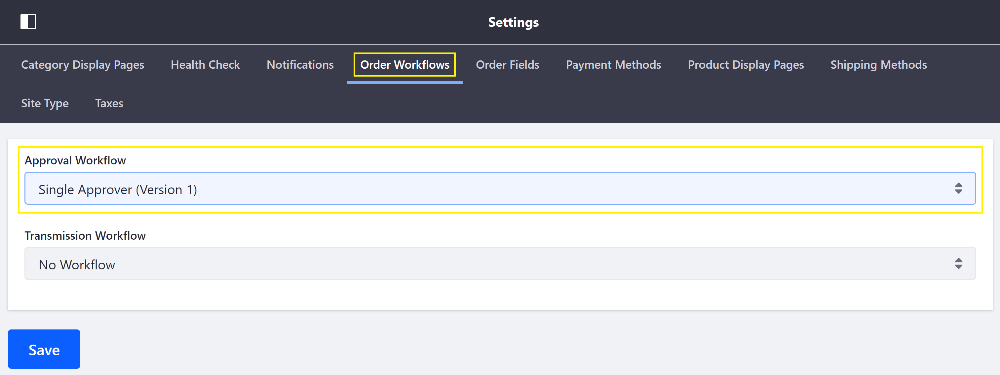
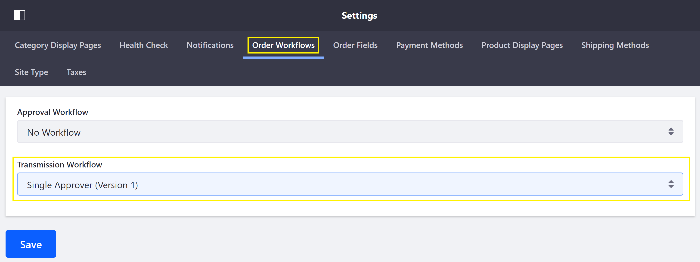

Enabling or Disabling Order Workflows¶
Order workflows are a site-specific setting that, if enabled, require the buyer or seller to give internal prior approval for an order before it can be processed.
This article documents how to enable and disable Order Workflows.
Enabling Approval Workflow¶
To enable an approval workflow on the buyer』s side, follow these steps:
Navigate to Site Administration → Commerce → Settings.
Click on the Order Workflows tab.
Click on Approval Workflow field and select from the available options in the drop down.

Click Save.
Enabling Transmission Workflow¶
To enable a transmission workflow on the seller』s side, follow these steps:
Navigate to the Order Workflows tab (per above).
Click on the Transmission Workflow field and select from the available options in the drop down.

Click Save.
Disabling an Order Workflow¶
To disable an order workflow, simply navigate to the Order Workflows tab, select the No Workflow option, and click Save.
Additional Information¶
Note: Out-of-the-box, Single Approver (Version 1) is the available order workflow. Custom workflows can be created and may then be selected in the Order Workflows tab.
- Order Workflows
- Approving or Rejecting Orders
- Order Life Cycle
- Orders Menu
- Order Management Statuses